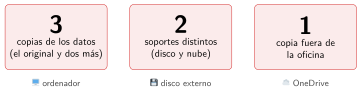

Protegerse: contraseñas, actualizaciones y copias
Criterios: 2b, 3f, 4h
🤔 Pienso10 min
Qué hago aquí: Piensa un momento y contesta con lo que ya sabes. No pasa nada si no lo sabes: es para empezar.
Sin escribir tu contraseña, contesta: ¿cuántos caracteres tiene? ¿Lleva mayúsculas, números y símbolos? ¿La usas en más de un sitio?
📖 Leo y aprendo40 min
Qué hago aquí: Lee despacio, mira los dibujos y los ejemplos, y quédate con la idea clave del final.
Una contraseña segura es larga (12 caracteres o más), mezcla mayúsculas, minúsculas, números y símbolos, no tiene datos personales y es distinta en cada servicio. Un truco: una frase que solo tú conozcas, como MiPerro_Toby_come3Croquetas!. Para recordarlas todas se usa un gestor de contraseñas (el del navegador, Bitwarden, Microsoft Authenticator).
El equipo también se protege:
Windows Update y programas
Seguridad de Windows
controla las conexiones
no administrador
BitLocker, contraseña al archivo
regla 3-2-1
Las actualizaciones arreglan fallos de seguridad: instálalas en cuanto lleguen (Configuración › Windows Update), y usa solo programas con licencia, que reciben esas actualizaciones. Windows ya trae antivirus y cortafuegos en Seguridad de Windows; comprueba que todo está en verde.

Con OneDrive de Microsoft 365, los archivos se guardan en la nube, se pueden recuperar versiones anteriores (Historial de versiones) y la Papelera guarda lo borrado durante 30 días. Para proteger un documento concreto: en Word o Excel, Archivo › Información › Proteger documento › Cifrar con contraseña; en Excel, además, Revisar › Proteger hoja para que no se borren las fórmulas.
✏️ Hago120 min
Qué hago aquí: Haz las actividades en orden. Empieza siempre por las básicas.
Ordena de menos a más segura: 123456, Maria2009, M4r1a!, ElMarDeSantander_Sube*7, qwerty. Explica por qué.
Activa la verificación en dos pasos en tu cuenta del centro con Microsoft Authenticator. ¿Qué te pide ahora al iniciar sesión?
Abre Seguridad de Windows y Windows Update. Anota: ¿está activo el antivirus? ¿Y el cortafuegos? ¿Cuándo se hizo el último análisis? ¿Hay actualizaciones pendientes? (criterio 2b)
Guarda la carpeta de tus trabajos del módulo en OneDrive. Borra un archivo, recupéralo de la Papelera y restaura una versión anterior de un Word con el Historial de versiones.
Cifra con contraseña la factura de Excel de la UD05 y protege la hoja para que solo se puedan escribir el código y la cantidad (criterios 3f y 4h).
Diseña el plan de copias de la Papelería Sena siguiendo la regla 3-2-1: qué se copia, dónde, cada cuánto y quién lo hace.
🚀 Amplío (si quieres saber más)
Qué hago aquí: ¿Has terminado? Lee la curiosidad o elige el reto. Es voluntario.
Entra en haveibeenpwned.com con tu correo personal y comprueba si ha aparecido en alguna filtración. ¿Qué tienes que hacer si sale?
✅ Compruebo10 min
Qué hago aquí: Contesta sin mirar la ficha y marca cómo lo llevas.